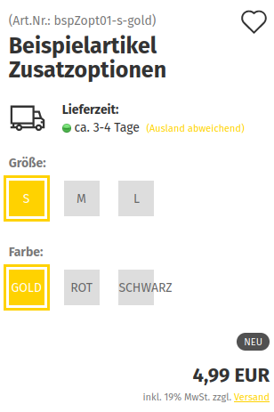
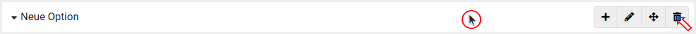
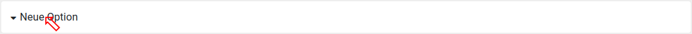

Optionen¶
Einleitung¶
Definitionen
Es werden folgende Begriffe verwendet:
-
Option:
- Zusammenfassung von Auswahlmöglichkeiten, um Ausprägungen oder Variationen von Artikeln abzubilden
- enthaltene Werte können einzeln einem Artikel zugeordnet werden
-
Wert:
- Auswahlmöglichkeit, die Teil einer Option ist
- kann einzeln einem Artikel zugeordnet werden
- Zuordnung kann unabhängig (Zusatzoptionen) oder abhängig (Artikelvarianten) von anderen Werten erfolgen
-
Zusatzoption:
- spezifischer Wert, der einem Artikel zugeordnet worden ist
- Auswahlen sind unabhängig voneinander
- verwendbar z.B. bei der Zusammenstellung eines Computers, die Grafikkarte kann unabhängig von der Festplatte ausgewählt werden
-
Artikelvariante | Variante | Kombination:
- spezifische Werte, die einem Artikel zugeordnet worden sind
- Auswahlen sind abhängig voneinander
- verwendbar z.B. bei Farbe und Größe von Textilien, beide Auswahlen lassen sich nicht vom Artikel trennen
Über Optionen lassen sich Auswahlmöglichkeiten für Artikel umsetzen. Diese Auswahlen bestehen aus der übergeordneten Option selbst und den zugehörigen Werten, die die Auswahlmöglichkeiten darstellen. Die Werte können einzeln ausgewählt und den Artikeln zugewiesen werden, um eine entsprechende Auswahlmöglichkeit zu schaffen.
Die Auswahlmöglichkeiten können verschieden dargestellt werden:
- Dropdown
- Radio Buttons
- Bild
- Text
- eingerahmter Text
Hinweis
Die Anzeigeart Eingerahmter Text ist nur für kurze Bezeichnungen geeignet. Bei Werten mit längeren Namen kann es zu Fehlern in der Darstellung kommen:

Hierbei können Werte wahlweise als Zusatzoptionen oder Artikelvarianten zugewiesen werden. Bei Zusatzoptionen können Auswahlmöglichkeiten ohne Abhängigkeiten erstellt werden.
Hinweis
Bei Zusatzoptionen findet eine Vorauswahl statt, während bei Artikelvarianten jeder Wert durch den Kunden selbst ausgewählt werden muss, bevor der Artikel in den Warenkorb gelegt werden kann.
Beispiel
Du verkaufst selbstgenähte Brieftaschen, bei denen Kunden das Muster des Stoffs und die Farbe für eine Bestickung auswählen können. Diese können beides nach Belieben kombinieren, eine Abhängigkeit zwischen Stoff und Bestickung bestehht nicht.
Du legst hierzu die folgenden Optionen an:
- Muster
- Farbe Stickerei
Für Muster könntest du z.B. die folgenden Werte anlegen:
- Polka Dot
- Streifen
- Karos
- ...
Für Farbe Stickerei wären z.B. die Werte
- marineblau
- oliv
- petrol
- cyan
- ...
denkbar.
Diese weist du dem Artikel als Zusatzoptionen zu, damit die Kunden frei darunter wählen können.
Beispiel
Du verkaufst Computer, die mit verschiedenen Komponenten bestückt werden können. Du möchtest, dass deine Kunden zwischen verschiedenen Grafikkarten und Festplatten wählen können. Dabei spielt es für die Auswahl der Festplatten keine Rolle, welche Grafikkarte verbaut wird.
Du legst daher folgende Optionen an:
- Grafikkarte
- Festplatte
Unter Grafikkarte legst du für jede Wahlmöglickeit einen Wert an:
- GTX 1080 Ti
- RTX 2080 Ti
- RTX 3090
- ...
usw.
Unter Festplatte könnten die Werte so aussehen:
- HDD 1 Terrabyte
- SSD 512 Gigabyte
- ...
Da deine Kunden ihre Auswahl beliebig treffen können, weist du die Werte deinem Artikel als Zusatzoptionen zu.
Beispiel
Du verkaufst Kleidungsstücke in verschiedenen Farben und Konfektionsgrößen. Farbe und Größe lassen sich naturgemäß nicht voneinander trennen, da etwa ein blaues XL-T-Shirt für den Verkauf nicht nachträglich umgefärbt oder in XXL vergrößert werden kann - es besteht eine Abhängigkeit zwischen den verschiedenen Ausprägungen.
Du legst folgende Optionen an:
- Farbe
- Größe
Für die Option Farbe legst du folgende Werte an:
- rot
- grün
- blau
- schwarz
- weiß
- ...
Für die Option Größe legst du folgende Werte an:
- S
- M
- L
- XL
- XXL
- ...
Die Werte weist du den Artikeln als Artikelvarianten zu, um die Abhängigkeit zwischen den Werten abbilden zu können.
Masken unter Artikel > Optionen¶
Übersicht unter Artikel > Optionen¶
| Schaltfläche | Beschreibung |
|---|---|
| Option(en) hinzufügen | öffnet die Maske Neue Option hinzufügen |
Bewegt man den Mauszeiger über einen Eintrag, stehen folgende Funktionen über die Symbole zur Verfügung:
| Symbol | Beschreibung |
|---|---|
| öffnet die Maske Neuen Wert | |
| öffnet die Maske Option Bearbeiten | |
| ermöglicht das Verschieben einer Option durch Ziehen an die gewünschte Stelle in der Auflistung | |
| öffnet den Dialog Löschen bestätigen für das Löschen der Option |
Durch Klick auf den Namen einer Option kann der Eintrag aufgeklappt und so die enthaltenen Werte angezeigt werden. Anschließend stehen weitere Funktionen zur Verfügung:
| Schaltfläche | Beschreibung |
|---|---|
| öffnet die Maske Wert bearbeiten | |
| ermöglicht das Verschieben eines Werts durch Ziehen an die gewünschte Stelle in der Auflistung innerhalb der Option | |
| öffnet den Dialog Löschen bestätigen für den Wert | |
| [Name der Option] hinzufügen | öffnet die Maske Neuen Wert |
Maske Neue Option hinzufügen¶
| Element | Beschreibung |
|---|---|
| [Landesflagge] | schaltet die Maske um, damit Einstellungen für mehrere Sprachen im Shop vorgenommen werden können |
| Bezeichnung | Name der Option, wird dem Kunden als Name der Auswahl im Artikel angezeigt |
| Admin Bezeichnung | interner Name der Option, ist nur im Gambio Admin sichtbar |
| Anzeigetyp | Wie wird die Auswahl im Artikel dargestellt (Eingerahmter Text, Dropdown, Bild, Radio(button), Text)? |
| Abbrechen | schließt den Dialog, ohne die Option anzulegen |
| Speichern | legt die Option mit den gemachten Eingaben und Einstellungen an |
Maske Neuen Wert¶

| Element | Beschreibung |
|---|---|
| [Landesflagge] | schaltet die Maske um, damit Einstellungen für mehrere Sprachen im Shop vorgenommen werden können |
| Bezeichnung | Name des Werts, wird dem Kunden im Artikel als Auswahlmöglichkeit angezeigt |
| Bild | Bild zur Darstellung der Auswahlmöglichkeit, wird dem Kunden angezeigt, wenn in der zugehörigen Option der Anzeigetyp auf Bild eingestellt ist |
| Artikelnummer | Artikelnummer des Werts, wird als (Teil-)Artikelnummer im Artikel angezeigt |
| Gewicht | Gewicht des Werts, wird bei Auswahl zum Gewicht im Hauptartikel addiert oder kann dieses ersetzen (Varianten). |
| Bruttopreis | Preis des Werts, wird bei Auswahl des Werts zu dem Preis des Hauptartikels addiert |
| Abbrechen | schließt den Dialog, ohne den Wert anzulegen |
| Speichern | schließt den Dialog und legt den Wert mit den vorgenommenen Eingaben an |
Maske Option bearbeiten¶
| Element | Beschreibung |
|---|---|
| [Landesflagge] | schaltet die Maske um, damit Einstellungen für mehrere Sprachen im Shop vorgenommen werden können |
| Bezeichnung | Name der Option, wird dem Kunden als Name der Auswahl im Artikel angezeigt |
| Admin Bezeichnung | interner Name der Option, ist nur im Gambio Admin sichtbar |
| Anzeigetyp | Wie wird die Auswahl im Artikel dargestellt (Eingerahmter Text, Dropdown, Bild, Radio(button), Text)? |
| Abbrechen | schließt den Dialog, ohne die Änderungen zu übernehmen |
| Speichern | übernimmt gemachte Eingaben und Einstellungen |
Maske Wert bearbeiten¶
| Element | Beschreibung |
|---|---|
| [Landesflagge] | schaltet die Maske um, damit Einstellungen für mehrere Sprachen im Shop vorgenommen werden können |
| Bezeichnung | Name des Werts, wird dem Kunden im Artikel als Auswahlmöglichkeit angezeigt |
| Bild | Bild zur Darstellung der Auswahlmöglichkeit, wird dem Kunden angezeigt, wenn in der zugehörigen Option der Anzeigetyp auf Bild eingestellt ist |
| Artikelnummer | Artikelnummer des Werts, wird als (Teil-)Artikelnummer im Artikel angezeigt |
| Gewicht | Gewicht des Werts, wird bei Auswahl zum Gewicht im Hauptartikel addiert oder kann dieses ersetzen (Varianten) |
| Bruttopreis | Preis des Werts, wird bei Auswahl des Werts zu dem Preis des Hauptartikels addiert |
| Abbrechen | schließt den Dialog, ohne die Änderungen zu übernehmen |
| Speichern | schließt den Dialog und übernimmt die vorgenommenen Änderungen |
Dialog Löschen bestätigen¶
| Schaltfläche | Beschreibung |
|---|---|
| Abbrechen | schließt dem Dialog, ohne die Option zu löschen |
| Löschen | entfernt die Option und die ggf. enthaltenen Werte |
Anlegen von Optionen und Werten¶
Optionen können unter Artikel > Optionen angelegt werden. Standardmäßig sind hier bereits Optionen vorhanden. Die Schaltfläche befindet sich rechts oben, oberhalb der bestehenden Einträge:
Nach Klick auf die Schaltfläche Option(en) hinzufügen öffnet sich das Dialogfenster zum Anlegen der neuen Option:
Es müssen alle mit einem roten Sternchen markierten Felder in der Maske ausgefüllt werden, damit die Option angelegt werden kann. Beachte hierbei, dass es für alle im Backend aktiven Sprachen einen eigenen Reiter gibt.
Achtung
Einstellungen müssen für alle Sprachen vorgenommen werden, die im Backend aktiv sind, damit eine Option angelegt werden kann. Unter Einstellungen / Sprache, Länder, Steuern / Sprachen kannst du über die Schaltfläche Aufrufen die Einstellungsseite hierzu anzeigen.
Nach dem Anlegen steht die neue Option in der Übersicht zur Verfügung, sodass Werte hinzugefügt werden können. Bewege hierzu wahlweise den Mauszeiger über den Eintrag und klicke auf das Plus-Symbol
oder klappe den Eintrag über einen Klick auf den Namen der Option auf und verwende eine der folgenden Schaltflächen:
Es öffnet sich der Dialog zum Anlegen eines neuen Werts:
Für die mit Sternchen markierten Felder müssen gültige Werte eingetragen werden. Die Eingaben müssen für jede Sprache gemacht werden, die im Backend des Shops aktiv ist.
Achtung
Einstellungen müssen für alle Sprachen vorgenommen werden, die im Backend aktiv sind, damit ein Wert angelegt werden kann. Unter Einstellungen / Sprache, Länder, Steuern / Sprachen kannst du über die Schaltfläche Aufrufen die Einstellungsseite hierzu anzeigen.
Bearbeiten von Optionen und Werten¶
Optionen und ihre zugehörigen Werte können unter Artikel > Optionen bearbeitet werden, klicke hierzu jeweils auf das zugehörige Bleistift-Symbol.
Die Symbole der Optionen werden angezeigt, wenn der Mauszeiger darüber bewegt oder der Eintrag durch Klick auf den Namen aufgeklappt wird:
Die Symbole der Werte werden ebenfalls angezeigt, wenn der Eintrag der zugehörigen Option ausgeklappt ist.
Sortieren von Optionen und Werten¶
Optionen und Werte lassen sich unter Artikel > Optionen sortieren. Hierzu kann das Pfeilkreuz-Symbol verwendet werden:
Sortieren von Einträgen
- bewege den Mauszeiger über das Symbol
- klicke das Symbol mit der linken Maustaste an und halte diese gedrückt
- ziehe den Eintrag in der Liste an die gewünschte Stelle
- lasse die linke Maustaste wieder los, um den Eintrag an seiner neuen Position einzusortieren
Löschen von Optionen und Werten¶
Unter Artikel > Optionen können Optionen und Werte gelöscht werden, klicke hierzu auf das jeweilige Mülltonnen-Symbol.
Die Symbole der Optionen werden angezeigt, wenn der Mauszeiger darüber bewegt oder der Eintrag durch Klick auf den Namen aufgeklappt wird:

Die Symbole der Werte werden ebenfalls angezeigt, wenn der Eintrag der zugehörigen Option ausgeklappt ist.

Vor dem Löschen von Optionen oder Werten wird eine Sicherheitsabfrage angezeigt:
Zusatzoptionen¶
Masken im Reiter Zusatzoptionen¶
Übersicht¶
Beim ersten Aufruf wird eine Platzhalter-Seite angezeigt, da dem Artikel noch keine Zusatzoptionen zugewiesen worden sind. Über die Schaltfläche Zusatzoption(en) zuweisen wird der zugehörige Dialog geöffnet.
Neue Zusatzoption zuweisen¶
Durch Anklicken eines Eintrags kann dieser aufgeklappt und die zugehörigen Werte angezeigt werden.
| Element | Beschreibung |
|---|---|
| Durchsuchen | Eingabefeld zum Filtern nach Optionen |
| Ausklappen eines Eintrags | |
| Zuweisen der angehakten Werte zu einem Artikel | |
| Entfernen der angehakten Werte aus einem Artikel | |
| Abbrechen | Schließen des Dialogs ohne Änderungen zu übernehmen |
| Speichern | Schließen des Dialogs mit Übernahme der Änderungen |
Zusatzoptionen bearbeiten, sortieren und löschen¶
| Schaltfläche | Beschreibung |
|---|---|
| Zusatzoption(en) zuweisen | öffnet die Maske Neue Zusatzoption zuweisen |
| Symbol | Beschreibung |
|---|---|
| öffnet die Maske Neuen Wert zu [Name der Zusatzoption] hinzufügen | |
| ermöglicht das Verschieben einer Zusatzoption durch Ziehen an die gewünschte Stelle in der Auflstung | |
| öffnet den Dialog Löschen bestätigen für das Löschen der Zusatzoption |

| Schaltfläche | Beschreibung |
|---|---|
| öffnet die Maske Option Wert ... bearbeiten | |
| ermöglicht das Verschieben eines Werts durch Ziehen an die gewünschte Stelle in der Auflistung innerhalb der Zusatzoption | |
| öffnet den Dialog Löschen bestätigen für das Löschen des Werts aus der Zusatzoption | |
| [Name der Option] hinzufügen | öffnet die Maske Neuen Wert zu ... hinzufügen |
| Element | Beschreibung |
|---|---|
| [Landesflagge] | schaltet die Maske um, damit Einstellungen für mehrere Sprachen im Shop vorgenommen werden können |
| Bezeichnung | Name des Werts, der im Artikel angezeigt wird |
| Bild | Kollektion für den neuen Wert einrichten |
| Artikelnummer | (Teil-)Artikelnummer des Werts |
| Auf Lager | Lagerstand des neuen Werts |
| Gewicht | Gewicht des neuen Werts, das zu dem Artikelgewicht addiert wird |
| Bruttopreis | Aufpreis des neuen Werts, wird zu dem Preis des Artikels addiert |
| Bestehenden Wert hinzufügen | schaltet auf die Maske Neuen Wert zu ... hinzufügen um, aus der auf die bereits angelegten Werte zugegriffen werden kann |
| Abbrechen | schließt den Dialog, ohne den neuen Wert anzulegen |
| Erstellen & Zuweisen | legt den neuen Wert an und weist ihn dem Artikel zu |
| Element | Beschreibung |
|---|---|
| Wert finden | Eingabefeld zum Filtern nach Werten |
| Zuweisen der angehakten Werte zu einem Artikel | |
| Entfernen der angehakten Werte aus einem Artikel | |
| Erstellen | wechselt zum Dialog Neuen Wert zu ... hinzufügen zum Erstellen eines neuen Werts |
| Abbrechen | Schließen des Dialogs ohne Änderungen zu übernehmen |
| Zuweisen & Speichern | Schließen des Dialogs mit Übernahme der Änderungen |
Zuweisen von Zusatzoptionen¶
Zusatzoptionen können einem Artikel unter Artikel > Artikel/Kategorien zugewiesen werden. Am einfachsten kann hierfür der Reiter Zusatzoptionen in der Artikelmaske verwendet werden:
Zusätzlich steht auch ein Eintrag in der Dropdown-Schaltfläche der Kategorieübersicht zur Verfügung:
In beiden Fällen gelangst du zur selben Seite:
Klicke hier auf Zusatzoption(en) zuweisen, um den Dialog zum Zuweisen zu öffnen:
Der Dialog ist in zwei Spalten aufgeteilt. Auf der linken Seite findest du die Optionen, die im Shop zur Verfügung stehen. Auf der rechten Seite siehst du die Optionen, welche dem Artikel bereits als Zusatzoptionen zugewiesen worden sind.
Klicke auf einen Eintrag, um diesen aufzuklappen und die Werte der zugehörigen Option anzuzeigen. Du kannst jeden Wert einzeln an- bzw. abwählen. Über die blaue Schaltfläche können die angehakten Werte für die Zuweisung ausgewählt werden:
Damit die Zusatzoptionen tatsächlich zugewiesen werden, muss dies über Klick auf Speichern bestätigt werden:
Bearbeiten von Zusatzoptionen¶
Bestehende Zusatzoptionen können unter Artikel > Artikel/Kategorien bearbeitet werden. Am einfachsten kannst du den Reiter Zusatzoptionen in der Artikelmaske verwenden, um zur Übersicht der Zusatzoptionen für den entsprechenden Artikel zu gelangen:
Alternativ kannst du auch die Dropdown-Schaltfläche in der Artikelmaske oder der Kategorieübersicht verwenden:
In der Übersicht werden die Zusatzoptionen aufgelistet:
Bewegt man den Mauszeiger über einen Eintrag, erscheinen die zugehörigen Symbole für Hinzufügen, Sortieren und Löschen:
Zudem kannst du den Eintrag mit einem Klick auf den Namen aufklappen, um die zugehörigen Werte anzuzeigen:

Hinzufügen von Werten¶
Zusatzoptionen, die einem Artikel zugewiesen worden sind, können nachträglich Werte hinzugefügt werden. Dies können nicht nur bestehende Werte sein, die noch nicht zugewiesen wurden. Es ist ebenfalls möglich einen Wert zum Zuweisen direkt neu anzulegen. Dieser wird in der zugehörigen Option erstellt und dem Artikel unmittelbar zugewiesen.
Hinzufügen von neuen Werten¶
Hinzufügen von neuen Werten
- klicke auf die +-Schaltfläche der Zusatzoption ODER die Schaltfläche ... hinzufügen im aufgeklappten Eintrag
- fülle die Felder im Dialog Neuen Wert zu ... hinzufügen aus
- richte bei Bedarf eine Kollektion über die Einstellung Bild ein
- klicke auf Erstellen & zuweisen, um die Einrichtung des neuen Werts abzuschließen
Hinzufügen von bestehenden Werten¶
Hinzufügen von bestehenden Werten
- klicke auf die +-Schaltfläche der Zusatzoption ODER die Schaltfläche ... hinzufügen im aufgeklappten Eintrag
- klicke auf die grüne Schaltfläche Bestehenden Wert hinzufügen, um den Dialog umzuschalten
- hake auf der linken Seite die Werte an, die du der Zusatzoption hinzufügen möchtest
- klicke auf die blaue >-Schaltfläche, um die angehakten Werte für die Zuweisung auszuwählen
- bestätige die Zuweisung mit einem Klick auf die Schaltfläche Zuweisen & Speichern
Bearbeiten von Werten¶
Bearbeiten eines Werts einer Zusatzoption
- klicke den Namen der zugehörigen Zusatzoption an, um den Eintrag aufzuklappen
- klicke bei dem jeweiligen Wert auf das Bleistift-Symbol
- ändere in der Maske Wert bearbeiten die gewünschten Feldinhalte bzw. Einstellungen
- bestätige die Änderung mit einem Klick auf Speichern
Sortieren von Werten¶
Sortieren von Werten innerhalb einer Zusatzoption
- klicke den Namen der zugehörigen Zusatzoption an, um den Eintrag aufzuklappen
- klicke das Symbol des zu sortierenden Werts an und halte die linke Maustaste gedrückt
- ziehe den Eintrag an die neue Position
- lasse die linke Maustaste wieder los, um den Eintrag zu platzieren
Entfernen von Werten¶
Am einfachsten kann der Wert einer Zusatzoption aus der Übersicht heraus entfernt werden. Es geht aber auch über den Umweg des Dialogs Neuen Wert zu ... hinzufügen, indem der entsprechende Wert auf der rechten, statt auf der linken Seite angehakt wird.
Hinweis
Beim Entfernen eines Werts aus einer Zusatzoption wird dieser nicht gelöscht, sondern lediglich nicht mehr in dem betreffenden Artikel bzw. der Zusatzoption verwendet.
Entfernen von Werten aus der Übersicht¶
Entfernen von Werten aus einer Zusatzoption über die Übersicht
- klicke den Namen der zugehörigen Zusatzoption an, um den Eintrag aufzuklappen
- klicke auf das Symbol
- bestätige die Sicherheitsabfrage mit einem Klick auf Löschen
Entfernen von Werten über den Dialog Neuen Wert zu ... hinzufügen¶
Entfernen von Werten aus einer Zusatzoption über den Dialog Neuen Wert zu ... hinzufügen
- klicke auf die +-Schaltfläche der Zusatzoption ODER die Schaltfläche ... hinzufügen im aufgeklappten Eintrag
- klicke auf die grüne Schaltfläche Bestehenden Wert hinzufügen, um den Dialog umzuschalten
- hake auf der rechten Seite die Werte an, die du aus den Zusatzoptionen entfernen möchtest
- klicke auf die rote <-Schaltfläche, um die angehakten Werte aus den Zusatzoptionen auszuwählen
- bestätige das Entfernen mit einem Klick auf die Schaltfläche Zuweisen & Speichern
Sortieren von Zusatzoptionen¶
Sortieren von Zusatzoptionen eines Artikels
- klicke das Symbol der zu sortierenden Zusatzoption an und halte die linke Maustaste gedrückt
- ziehe den Eintrag an die neue Position
- lasse die linke Maustaste wieder los, um den Eintrag zu platzieren
Entfernen von Zusatzoptionen¶
Hinweis
Beim Entfernen einer Zusatzoption aus einem Artikel wird die zugehörige Option nicht gelöscht, sondern lediglich nicht mehr in dem betreffenden Artikel verwendet.
Entfernen von Zusatzoptionen aus einem Artikel
- bewege den Mauszeiger über den Namen der jeweiligen Zusatzoption, um die Symbole für die Aktionen anzuzeigen
- klicke auf das Symbol
- bestätige die Sicherheitsabfrage mit einem Klick auf Löschen
Artikelvarianten¶
Artikelvarianten werden unter Artikel > Artikel/Kategorien verwaltet. Die Übersichtsseite für Varianten kann über den Reiter Varianten in der Artikelmaske aufgerufen werden:
Alternativ kann die Seite ebenfalls über den Eintrag Varianten der Dropdown-Schaltfläche der Kategorieübersicht aufgerufen werden:
Masken im Reiter Varianten¶
Artikelvarianten erstellen¶
Diese Übersicht wird angezeigt, wenn der betreffende Artikel keine Artikelvarianten hat und ermöglicht es, diese aus den bestehenden Optionen zu erstellen.
| Element | Beschreibung |
|---|---|
| [Artikelname] | Link zum Aufrufen der Artikelmaske, entspricht Reiter Allgemein |
| Standardwerte | Öffnet den Dialog Standadwerte, über die die Standardbelegung von Einstellungen für Varianten festgelegt werden kann |
| Symbol zum Aufklappen der Einträge und Anzeige/Auswahl der Werte | |
| Artikelvarianten manuell erstellen | Ruft den Dialog Variante hinzufügen mit den ausgewählten Optionen und Werten auf, sodass Varianten händisch erstellt werden können |
| Artikelvarianten automatisch ermitteln | Erzeugt automatisch Varianten aus den gewählten Optionen und Werten, die bei Bedarf nachträglich bearbeitet werden können |
Dialog Standardwerte¶
Über den Dialog Standardwerte können Vorbelegungen und Voreinstellungen festgelegt werden, die sowohl beim manuellen Erstellen als auch dem automatischen Ermitteln von Artikelvarianten verwendet werden.
| Element | Beschreibung |
|---|---|
| EAN | Vorbelegung für das Feld EAN beim Erstellen einer Variante |
| Bestand | Vorbelegung für das Feld Bestand beim Erstellen einer Variante |
| Gewicht | Vorbelegung für das Feld Gewicht beim Erstellen einer Variante |
| Preistyp | Voreinstellung für das Dropdown Preistyp beim Erstellen einer Variante |
| Preis | Vorbelegung für das Feld Preis beim Erstellen einer Variante |
| VPE (Wert) | Vorbelegung für das Eingabefeld der Einstellung VPE beim Erstellen einer Variante |
| VPE | Voreinstellung für das Dropdown der Einstellung VPE beim Erstellen einer Variante |
| Lieferzeit | Voreinstellung für das Dropdown Lieferzeit beim Erstellen einer Variante |
| Abbrechen | schließt den Dialog, ohne die Änderungen zu übernehmen |
| Speichern | schließt den Dialog und übernimmt die gemachten Änderungen |
Dialog Artikelvarianten erstellen¶
Der Dialog Artikelvarianten erstellen wird beim Klick auf die Schaltfläche Artikelvarianten manuell erstellen bzw. Artikelvariante hinzufügen aufgerufen, wenn Optionen hierfür ausgewählt worden sind.
| Element | Beschreibung |
|---|---|
| [Option 1] | Dropdown, über das ein Wert aus der ersten Option ausgewählt werden kann |
| ... | ... |
| [Option n] | Dropdown, über das ein Wert aus der letzten Option ausgewählt werden kann |
| Sortiernummer | Sortierung der Artikelvariante in der Übersicht des Gambio Admins |
| Artikelnummer | Artikenummer bzw. Teilartikelnummer der Artikelvariante |
Hinweis
Ob die Artikelnummer als Teilartikelnummer verwendet wird, kann im Gambio Admin unter Einstellungen / Artikel & Kategorien / Produkte festgelegt werden. Ist hier der Haken für Artikelvarianten-Artikelnummer anhängen gesetzt, wird die Artikelnummer der Variante als Teilartikelnummer verwendet und an die Artikelnummer des Hauptartikels angehängt, anstatt diese zu ersetzen.
| Element | Beschreibung |
|---|---|
| EAN | EAN der Artikelvariante |
| ASIN | ASIN der Artikelvariante |
| GTIN | GTIN der Artikelvariante |
| Bestand | Lagerstand der Artikelvariante |
| Gewicht | Gewicht bzw. zusätzliches Gewicht der Artikelvariante (siehe Maske Einstellungen) |
| Preistyp | Wie soll der Aufpreis für die Artikelvariante ermittelt werden? |
| Artikelvarianten-Festpreis: der im Feld Preis eingetragene Wert wird als Aufpreis berechnet | |
| Preis aus Artikeloptionen berechnen: der Aufpreis der für die Variante verwendeten Optionen wird addiert | |
| Preis | Aufpreis der Artikelvariante, wird zum Preis im Artikel addiert |
| VPE | VPE-Wert und Verpackungseinheit der Artikelvariante |
| Lieferzeit | Lieferstatus der Artikelvariante |
| Bild | Auswahl der Kollektion für die Artikelvariante |
| Abbrechen | Schließen des Dialogs, ohne die Artikelvariante hinzuzufügen |
| Speichern | Anlegen der Artikelvariante mit den aktuellen Einstellungen |
| Speichern & Schließen | Schließen des Dialogs und Anlegen der Artikelvariante mit den aktuellen Einstellungen |
Variantenübersicht¶

| Element | Beschreibung |
|---|---|
| [Artikelname] | Aufruf der Artikelmaske, entspricht dem Reiter Allgemein |
| Einstellungen | Aufruf des Dialogs Einstellungen |
| Zuweisung ändern | Ruft die Übersicht auf, aus der die Artikelvarianten neu erzeugt werden können |
| Standardwerte | Öffnet den Dialog Standadwerte, über den die Standardbelegung von Einstellungen für Varianten festgelegt werden kann |
| klappt die Ansicht auf, Anzeige der Artikelvarianten aufgeschlüsselt nach Optionen | |
| öffnet die Maske Artikelvarianten bearbeiten | |
| öffnet die Maske Kombination löschen | |
| Checkbox für das mehrfache Löschen (Maske Kombinationen löschen) | |
| Artikelvariante hinzufügen | Aufruf des Dialogs Artikelvariante hinzufügen beim nachträglichen Hinzufügen von Werten aus den bereits verwendeten Optionen |
| Kombinationen löschen | Aufruf des Dialogs Kombinationen löschen bei Verwendung der Checkboxen für die Mehrfachauswahl |
Einstellungen¶
| Element | Beschreibung |
|---|---|
| Dropdown Modus | Der Dropdown Modus legt fest, wie die einzelnen Werte im Artikel ausgewählt werden können: |
| Standard, alle Werte immer auswählbar: Alle möglichen Artikelvarianten können ausgewählt werden. Bei Auswahl von nicht konfigurierten Varianten erscheint ein Hinweistext Diese Kombination existiert nicht... | |
| Reihenfolge der Auswahl beliebig, nur mögliche Werte auswählbar: Nach Auswahl eines Wertes werden in der zweiten Auswahl alle Werte angezeigt; ausgewählt werden können nur Artikelvarianten, die konfiguriert wurden. | |
| Reihenfolge der Auswahl vorgegeben, nur mögliche Werte auswählbar: Der zweite (dritte, vierte) Wert kann erst ausgewählt werden, wenn der vorangegangene Wert ausgewählt wurde. Alle möglichen Artikelvarianten werden angezeigt, ausgewählt werden können nur Varianten, die konfiguriert wurden. | |
| Artikelvarianten-Preis anzeigen | Wenn diese Einstellung aktiviert ist, werden die Aufpreise der einzelnen Werte angezeigt. |
| Gewichtsberechnung | Bei der Gewichtsberechnung sind zwei Einstellungen möglich: |
| Gewichte addieren: das eingetragene Artikelgewicht und das Gewicht der jeweiligen Artikelvariante werden zusammengerechnet | |
| Artikelgewicht ersetzen: das eingetragene Artikelgewicht wird bei Auswahl einer Artikelvariante durch dessen Gewicht ersetzt | |
| Bestandsprüfung | Die Bestandsprüfung verfügt über vier Auswahlmöglichkeiten: |
| Standard (globale Bestands-Einstellungen): die globalen Einstellungen für Artikelvarianten werden verwendet | |
| Artikelbestand: nur der Artikelbestand wird geprüft und angezeigt | |
| Artikelvariantenbestand: nur der Artikelvariantenbestand wird geprüft und angezeigt, wenn eine Variante ausgewählt wurde | |
| Keine Prüfung: es findet keine Bestandsprüfung statt | |
| Lieferzeitanzeige | Mit dieser Einstellung wird festgelegt welche Lieferzeit für den Lieferstatus verwendet wird: |
| Artikellieferzeit: es wird die im Artikel eingestellte Lieferzeit verwendet | |
| Artikelvarianten-Lieferzeit: es wird die in der ausgewählten Variante eingestellte Lieferzeit verwendet | |
| Abbrechen | schließt den Dialog, ohne Änderungen zu übernehmen |
| Speichern | schließt den Dialog und übernimmt die Änderungen |
Zuweisung ändern¶
Über Zuweisung ändern wird die Übersicht der Optionen angezeigt, die dem Artikel als Artikelvarianten zugewiesen sind.
Hinweis
Es können nur die Werte aus den bisher zugewiesenen Optionen geändert werden. Werte aus anderen Optionen stehen nicht zur Verfügung.
Artikelvarianten bearbeiten¶
| Element | Beschreibung |
|---|---|
| [Option 1] | Dropdown, über das ein Wert aus der ersten Option ausgewählt werden kann |
| ... | ... |
| [Option n] | Dropdown, über das ein Wert aus der letzten Option ausgewählt werden kann |
| Sortiernummer | Sortierung der Artikelvariante in der Übersicht des Gambio Admins |
| Artikelnummer | Artikenummer bzw. Teilartikelnummer der Artikelvariante |
Hinweis
Ob die Artikelnummer als Teilartikelnummer verwendet wird, kann im Gambio Admin unter Einstellungen / Artikel & Kategorien / Produkte festgelegt werden. Ist hier der Haken für Artikelvarianten-Artikelnummer anhängen gesetzt, wird die Artikelnummer der Variante als Teilartikelnummer verwendet und an die Artikelnummer des Hauptartikels angehängt, anstatt diese zu ersetzen.
| Element | Beschreibung |
|---|---|
| EAN | EAN der Artikelvariante |
| ASIN | ASIN der Artikelvariante |
| GTIN | GTIN der Artikelvariante |
| Bestand | Lagerstand der Artikelvariante |
| Gewicht | Gewicht bzw. zusätzliches Gewicht der Artikelvariante (siehe Maske Einstellungen) |
| Preistyp | Wie soll der Aufpreis für die Artikelvariante ermittelt werden? |
| Artikelvarianten-Festpreis: der im Feld Preis eingetragene Wert wird als Aufpreis berechnet | |
| Preis aus Artikeloptionen berechnen: der Aufpreis der für die Variante verwendeten Optionen wird addiert | |
| Preis | Aufpreis der Artikelvariante, wird zum Preis im Artikel addiert |
| VPE | VPE-Wert und Verpackungseinheit der Artikelvariante |
| Lieferzeit | Lieferstatus der Artikelvariante |
| Bild | Auswahl der Kollektion für die Artikelvariante |
| Abbrechen | Schließen des Dialogs, ohne die Änderungen zu speichern |
| Speichern | Speichern der Artikelvariante mit den aktuellen Einstellungen |
| Speichern & Schließen | Schließen des Dialogs und Speichern der Artikelvariante mit den aktuellen Einstellungen |
Kombination löschen¶
| Schaltfläche | Beschreibung |
|---|---|
| Abbrechen | schließt den Dialog, ohne die Variante zu löschen |
| Löschen | schließt den Dialog und löscht die Variante, ohne weitere Sicherheitsabfrage |
Kombinationen löschen¶
| Element | Beschreibung |
|---|---|
| Alle Kombinationen dieses Artikels löschen | ist der Haken gesetzt, werden beim Löschen alle Kombinationen entfernt, auch wenn nicht alle Kombinationen bei der Mehrfachauswahl angehakt sind |
| Abbrechen | schließt den Dialog, ohne die Kombinationen zu entfernen |
| Löschen | schließt den Dialog und entfernt die ausgewählten bzw. alle Kombinationen |
Funktionen im Reiter Varianten¶
Einstellungen vornehmen¶
Über die Einstellungen wird das Verhalten des Artikels in Bezug auf seine Artikelvarianten festgelegt.

Klicke hierzu auf den Link Einstellungen im oberen Teil der Übersicht. Es wird die zugehörige Maske angezeigt:
Nimm die gewünschten Einstellungen vor und bestätige diese mit einem Klick auf Speichern. Über Abbrechen kannst du die Maske verlassen, ohne vorgenommene Änderungen zu übernehmen.
Zuweisung ändern¶
Über Zuweisung ändern können nachträglich die Werte der Artikelvarianten angepasst werden. Hierbei könne nur Werte aus Optionen verwendet werden, die dem Artikel bereits zugewiesen worden sind.
Klicke hierzu auf den Link Zuweisung ändern im oberen Teil der Übersicht. Es wird eine vergleichbare Ansicht wie beim Erstellen von Artikelvarianten angezeigt:
Über einen Klick auf das Plus-Zeichen kann der Eintrag für eine Option ausgeklappt werden:
Klicke hier mit gedrückter Steuerungstaste (Strg) bzw. Umschalttaste (⇧, Taste für das Großschreiben) die Werte an, welche du für die Artikelvarianten verwenden möchtest:

Über Artikelvarianten manuell erstellen bzw. Artikelvarianten automatisch erstellen kannst du aus den Werten die Varianten erstellen (siehe Anlegen von Artikelvarianten).
Standardwerte festlegen¶
Mit Hilfe der Standardwerte können Felder mit gleichen Werten oder Einstellungen vorbelegt werden, wenn neue Artikelvarianten erstellt werden. Auf diese Weise muss die gleiche Einstellung - wie z.B. ein identisches Gewicht bei einem Artikel, der lediglich mit verschiedenen Farben und Motiven verkauft wird - nur ein Mal vorgenommen werden.
Hinweis
Die Standardwerte werden nicht für alle Artikel sondern nur den gerade bearbeiteten Artikel festgelegt.
Eine Änderung der Standardwerte wirkt sich nicht auf bestehende Artikelvarianten aus.
Wenn du neue Artikelvarianten anlegen möchtest, die z.T. gleiche Einstellungen aufweisen, dann kannst du diese zuvor als Standardwerte festlegen. Klicke hierzu auf den Link Standardwerte:
Es öffnet sich der Dialog Standardwerte:
Nimm die gewünschten Einstellungen vor und bestätige sie mit einem Klick auf Speichern.
Wenn du nun über Artikelvariante hinzufügen oder Zuweisung ändern weitere Varianten für den aktuellen Artikel anlegst, werden diese die Standardwerte verwenden.
Über Abbrechen kannst du den Dialog schließen, ohne gemachte Änderungen zu übernehmen.
Anlegen von Artikelvarianten¶
Rufe hierzu den Reiter Varianten aus der Artikelmaske auf, um zur entsprechenden Übersicht zu gelangen:
Wähle hier die Optionen aus, aus denen du Werte zu Artikelvarianten kombinieren möchtest. Durch Aufklappen der Einträge mit dem Plus-Symbol kannst du hierbei einzelne Werte vorauswählen, wenn du nicht alle Werte verwenden möchtest:
Hinweis
Für die Auswahl der Werte wird ein sogenanntes Multiselect-Element verwendet. Du kannst hierüber mehrere Werte auswählen, indem du die Steuerungstaste (Strg) beim Anklicken der Einträge gedrückt hältst. Wenn du mehrere direkt aufeinanderfolgende Werte auswählen möchtest, kannst du einfach mit gedrückter Umschalttaste (⇧, Taste für das Großschreiben) den ersten und den letzten Eintrag anklicken.
Artikelvarianten manuell erstellen¶
Beim manuellen Erstellen von Artikelvarianten wird nach der Auswahl der Werte jede einzelne Variante per Hand angelegt. Dies empfiehlt sich, wenn du nur einen kleinen Teil der Werte zum jetzigen Zeitpunkt als Artikelvariante zuweisen möchtest oder sich diese stark voneinander unterscheiden.
Klicke nach der Vorauswahl auf Artikelvarianten manuell erstellen. Du gelangst auf die leere Übersichtsseite:
Klicke hier auf Artikelvariante hinzufügen, um die Maske zum Anlegen einer einzelnen Artikelvariante zu öffnen.
Hinweis
Wenn du bei deinen Varianten viele Felder mit vergleichbaren bzw. ähnlichen Inhalten füllen oder hierfür mehrfach die gleichen Einstellungen verwenden möchtest, kannst du diese über die unter Standardwerte verlinkte Maske vorbelegen lassen und dir so beim Anlegen Arbeit sparen.
Am oberen Ende der Maske werden die zuvor ausgewählten Optionen angezeigt. Wählen hier die gewünschten Werte aus und fülle die Felder aus bzw. nimm die Einstellungen für die neue Artikelvariante vor.
Anlegen mehrerer Artikelvarianten
- Wähle die Werte aus, die du zu einer Artikelvariante kombinieren möchtest
- Nimm alle gewünschten Einstellungen und Eingaben für die Artikelvariante vor
- Bestätige mit Klick auf Speichern
- Wiederhole Schritt 1 bis 3
Anlegen einer einzelnen Artikelvariante
- Wähle die Werte aus, die du zu einer Artikelvariante kombinieren möchtest
- Nimm alle gewünschten Einstellungen und Eingaben für die Artikelvariante vor
- Bestätige mit Klick auf Speichern & Schließen
Artikelvarianten automatisch erstellen¶
Das automatische Erstellen von Artikelvarianten bietet sich an, wenn eine große Anzahl an Varianten mit ähnlichen Einstellungen erstellt werden sollen.
Klicke nach dem Auswählen der Optionen und Werte auf Artikelvarianten automatisch erstellen. Die Varianten werden automatisch angelegt und verwenden alle die gleichen Voreinstellungen, wie unter Standardwerte festgelegt.
Eingaben und Einstellungen, die von den Standardwerten abweichen oder dort nicht enthalten sind, müssen nachträglich beim Bearbeiten der Artikelvarianten geändert werden.
Bearbeiten von Artikelvarianten¶
Artikelvarianten können über einen Klick auf das Bleistift-Symbol bearbeitet werden.
Es öffnet sich der Dialog Artikelvarianten bearbeiten:
Über die Schaltflächen Vorherige und Nächste kann zur vorherigen bzw. nächsten Variante in der Liste gesprungen werden.
Je nach Bildschirmgröße werden nicht alle Einstellungen auf einen Blick angezeigt. Über den Scrollbalken auf der rechten Seite sind ggf. versteckte Felder und Elemente zu erreichen.
Hierzu zählen auch die Schaltflächen Abbrechen, Speichern sowie Speichern & Schließen.
Löschen von Artikelvarianten¶
Artikelvarianten können aus der Übersicht heraus sowohl einzeln als auch über eine Mehrfachauswahl entfernt werden.
Löschen von einzelnen Artikelvarianten¶
Über das rote x-Symbol kann eine einzelne Variante entfernt werden:
Es erfolgt eine Sicherheitsabfrage, ob die Variante tatsächlich entfernt werden soll:

Bestätige diese mit einem Klick auf Löschen.
Löschen von mehreren Artikelvarianten¶
Wenn mehrere Artikelvarianten entfernt werden sollen, bietet sich die Mehrfachauswahl an:
Sobald mindestens eine Variante durch Anhaken ausgewählt ist, wird die Schaltfläche Kombinationen löschen angezeigt. Zudem kannst du über die Box oben rechts (in der Abbildung gelb umrandet) alle Einträge gleichzeitig an- oder abwählen.
Nach Klick auf die Schaltfläche Kombinationen löschen erfolgt eine Sicherheitsabfrage. Klicke hier auf Löschen, um diese zu bestätigen und die Artikelvarianten zu entfernen. Über die Auswahl Alle Kombinationen dieses Artikels löschen (in der Abbildung gelb markiert) können alle Varianten entfernt werden, auch wenn nur eine über die Mehrfachauswahl angehakt worden ist.